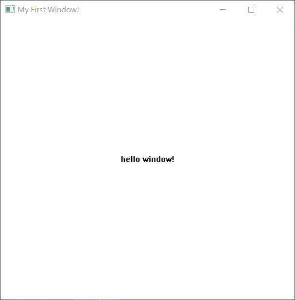
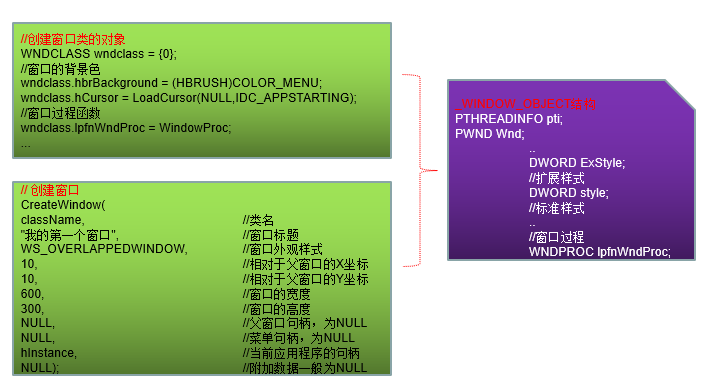

# 楔子
在前面我们分析了：
一个 GUI 线程有一个消息队列
普通线程 GUI 线程 THREAD.W32THREAD THREADINFO 消息队列
一个线程可以有多个窗口，所有窗口共享一个消息队列
WND // 窗口结构PTHREADINFO pti // 所属线程WNDPROC_PWND lpfnWndProc ; // 窗口过程 (窗口回调函数)
# 窗口程序的创建
#include<stdio.h> | |
#include<Windows.h> | |
#define WIN32_LEAN_AND_MEAN | |
// 声明回调函数 | |
LRESULT CALLBACK WindowProc( | |
HWND hwnd, | |
UINT uMsg, | |
WPARAM wParam, | |
LPARAM lParam | |
); | |
int WINAPI WinMain(HINSTANCE hInstance, HINSTANCE hPrevInstance, LPSTR lpCmdLine, int nCmdShow) | |
{ | |
// 保存 GetLastError 的返回值 | |
TCHAR szOutBuff[0x80]; | |
// 创建窗口类 | |
// 初始化 | |
WNDCLASSEX mywnd = { 0 }; | |
mywnd.cbSize = sizeof(WNDCLASSEX); | |
mywnd.style = CS_HREDRAW | CS_VREDRAW; | |
// 窗口类名 | |
TCHAR wndname[] = TEXT("第一个窗口"); | |
mywnd.lpszClassName = wndname; | |
// 回调函数 | |
mywnd.lpfnWndProc = WindowProc; | |
// 标志该窗口所在实例 | |
mywnd.hInstance = hInstance; | |
// 设置画刷 | |
mywnd.hbrBackground = (HBRUSH)GetStockObject(WHITE_BRUSH); | |
// 注册窗口类 | |
RegisterClassEx(&mywnd); | |
// 创建窗口 | |
HWND hwnd = CreateWindow( | |
wndname, | |
TEXT("My First Window!"), | |
WS_OVERLAPPEDWINDOW, | |
0, | |
0, | |
500, | |
500, | |
NULL, | |
NULL, | |
hInstance, | |
NULL | |
); | |
// 判断是否创建成功 | |
if(hwnd==NULL) | |
{ | |
TCHAR str[30] = { NULL }; | |
wsprintf(str, L"%s", L"CreateWindow Error!!"); | |
OutputDebugString(str); | |
} | |
// 显示窗口 | |
ShowWindow(hwnd, nCmdShow); | |
UpdateWindow(hwnd); | |
// 消息循环 | |
MSG msg; | |
BOOL bRet; | |
// 我们的窗口回调. | |
while ((bRet = GetMessage(&msg, NULL, 0, 0)) != 0) | |
{ | |
if (bRet == -1) | |
{ | |
// handle the error and possibly exit | |
wsprintf(szOutBuff, TEXT("Error: %d\n"), GetLastError()); | |
OutputDebugString(szOutBuff); | |
} | |
else | |
{ | |
TranslateMessage(&msg); // 键盘消息转换为小写. | |
DispatchMessage(&msg); // 分发消息。将我们的消息传递给我们的回调函数处理 重要函数。此消息会将 Windows 的消息。发送给我们 定义窗口类的时候给的回调函数。这样我们就可以根据消息执行我们代码了. | |
} | |
} | |
return 0; | |
} | |
// 我们的窗口回调 | |
LRESULT CALLBACK WindowProc( | |
HWND hWnd, | |
UINT message, | |
WPARAM wParam, | |
LPARAM lParam | |
) | |
{ | |
switch (message) | |
{ | |
case WM_CREATE: | |
{ | |
return 0; | |
} | |
// 当窗口开始绘制的时候 | |
case WM_PAINT: | |
{ | |
PAINTSTRUCT ps; | |
RECT rect; | |
HDC hdc = BeginPaint(hWnd, &ps); | |
GetClientRect(hWnd, &rect); | |
DrawText( | |
hdc, | |
TEXT("hello window!"), | |
-1, | |
&rect, | |
DT_SINGLELINE | DT_CENTER | DT_VCENTER | |
); | |
EndPaint(hWnd, &ps); | |
return 0; | |
} | |
// 打印 | |
case WM_CHAR: | |
{ | |
TCHAR szOutBuffer[0x10]; | |
wsprintf(szOutBuffer, L"%c\n", wParam); | |
OutputDebugString(szOutBuffer); | |
return 0; | |
} | |
case WM_DESTROY: | |
PostQuitMessage(0); | |
break; | |
default: | |
return DefWindowProc(hWnd, message, wParam, lParam); | |
} | |
return 0; | |
} |

我们要创建一个简单的窗口就要有这么多的步骤，为什么要这么写呢？

我们在 3 环写主要是向 0 环传递这些信心，以便在 0 环创建一个窗口的结构体。
我们看到的只是一个窗口，看不到的是在内核中那些结构体，因为调用了 GUI 函数，此时我们也是一个 GUI 线程了，有消息队列了，接着向后面看，有一个循环不停的取往消息队列中取消息，然后加工、分发消息。
很多人只知道代码要这样写，并不清楚为什么这样写，就是不了解在 0 环做了什么事情，消息机制绝大部分的实现就是在 0 环做的，如果不了解消息机制在 0 环做了什么事情，就不会知道 3 环的代码为什么要这样写。
接下来我们了解消息循环。
# 消息循环
MSG msg; | |
while(GetMessage(&msg, NULL, 0, 0)) // 从消息队列中取出消息 | |
{ | |
TranslateMessage(&msg); // 加工消息 | |
DispatchMessage(&msg); // 分发消息 | |
} |
使用 SendMessage 与 PostMessage 发送的消息位于同一组队列中吗？
不同类型的消息被置于不同队列。(这如何在 Windows 中实现的？)
# 消息的接收
GetMessage
描述：从消息队列中取出消息
BOOL WINAPI GetMessage( | |
LPMSG lpMsg, // 返回从队列中取出的消息 | |
HWND hWnd, // 过滤条件一：窗口句柄 | |
UINT wMsgFilterMin, // 过滤条件二：最小值 | |
UINT wMsgFilterMax // 过滤条件三：最大值 | |
); |
主要功能：循环判断是否存在属于该窗口的消息，若存在，则将消息存储到 MSG 指定的结构中，并将消息从列表中删除。
GetMessage --> NtUserGetMessage --> xxxGetMessage（这是一个宏，也就是 xxxInternalGetMessage 函数） --> xxxRealInternalGetMessage
注意：事实上，GetMessage 还做了一件很重要的事情，即在接收消息时，将 SentMessagesListHead 中的消息进行处理
有关消息发送，可以通过 SendMessage 或者 PostMessage 进行发送，它们有所不同，前者是同步的，后者是异步的，我们可以做一个实验验证: